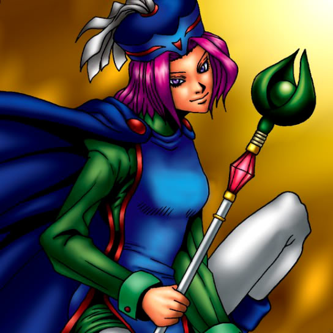

Water Magician

STATS
ATK: 1400
DEF: 1000DECK COST
Deck Cost per Card: 24Fusion List (18 Possible Fusions)
- Water Magician + Ancient Jar = Mystical Sand
- Water Magician + Blackland Fire Dragon = Spike Seadra
- Water Magician + Darkfire Dragon = Spike Seadra
- Water Magician + Darkworld Thorns = Queen of Autumn Leaves
- Water Magician + Destroyer Golem = Mystical Sand
- Water Magician + Fusionist = Nekogal #2
- Water Magician + Griggle = Queen of Autumn Leaves
- Water Magician + Hourglass of Life = Dark Witch
- Water Magician + Living Vase = Queen of Autumn Leaves
- Water Magician + Milus Radiant = Nekogal #2
- Water Magician + Morphing Jar = Mystical Sand
- Water Magician + Mushroom Man = Queen of Autumn Leaves
- Water Magician + One-Eyed Shield Dragon = Spike Seadra
- Water Magician + Petit Dragon = Spike Seadra
- Water Magician + Rainbow Flower = Queen of Autumn Leaves
- Water Magician + Silver Fang = Nekogal #2
- Water Magician + Stone Armadiller = Mystical Sand
- Water Magician + Stone D. = Mystical Sand